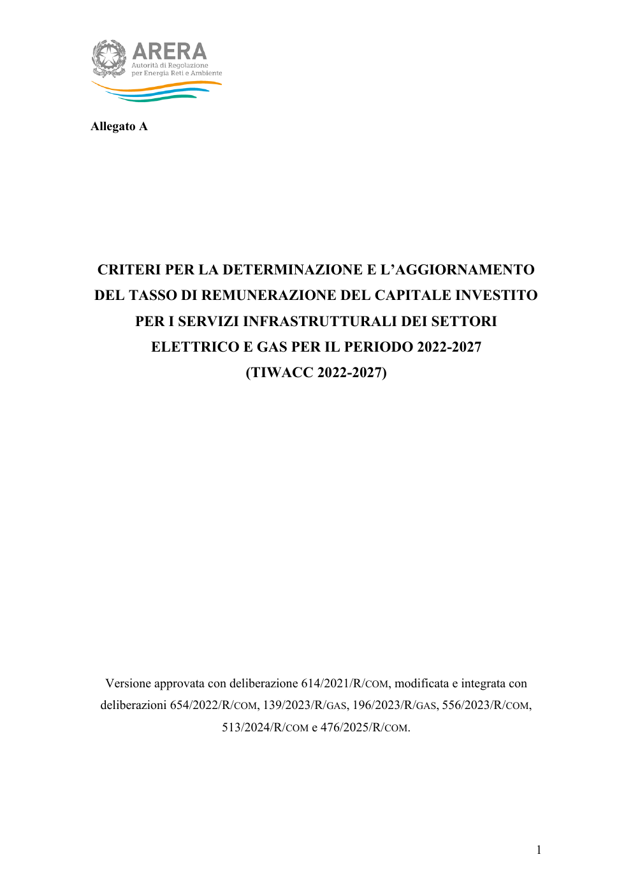

Allegato A - TIWACC
Cost of capital referenceRiferimento costo del capitale
A bilingual, model-ready view of the ARERA criteria for determining and updating the pre-tax real WACC for regulated electricity and gas infrastructure services. Una vista bilingue e pronta per il modello dei criteri ARERA per determinare e aggiornare il WACC reale pre-tasse dei servizi infrastrutturali regolati elettrici e gas.

English working translationTesto fonte
What the TIWACC document establishesCosa stabilisce il documento TIWACC
This is a faithful working translation of the document's structure and regulatory meaning, written for use in the A2A cost-benefit model. Criteri per la determinazione e l'aggiornamento del tasso di remunerazione del capitale per i servizi infrastrutturali dei settori elettrico e gas per il periodo 2022-2027.
- Document purposeFinalità del documentoIt defines how ARERA determines and updates the real pre-tax weighted average cost of capital for regulated electricity and gas infrastructure services.Definisce come ARERA determina e aggiorna il costo medio ponderato del capitale reale pre-tasse per i servizi infrastrutturali regolati elettrici e gas.
- Regulatory periodPeriodo regolatorioThe second WACC regulatory period runs from 1 January 2022 to 31 December 2027 and is divided into two three-year sub-periods.Il secondo periodo regolatorio WACC va dal 1 gennaio 2022 al 31 dicembre 2027 ed è diviso in due sub-periodi triennali.
- CBA relevanceRilevanza per l'ACBFor CP Caracciolo, the key use is the discount-rate assumption. The relevant service is electricity distribution and metering.Per CP Caracciolo, l'uso principale è l'ipotesi di tasso di attualizzazione. Il servizio rilevante è distribuzione e misura energia elettrica.
- 2025-2027 valueValore 2025-2027The WACC for electricity distribution and metering is 5.60% for 2025, 2026, and 2027.Il WACC per distribuzione e misura energia elettrica è 5,60% per 2025, 2026 e 2027.
DefinitionsDefinizioni
The document defines the Authority, asset beta, levered beta, gearing, WACC, and 2PWACC. Asset beta measures systematic risk before financial-structure effects; levered beta includes those effects. Gearing is debt divided by debt plus equity.
Il documento definisce Autorità, beta asset, beta levered, gearing, WACC e 2PWACC. Il beta asset misura il rischio sistematico prima degli effetti della struttura finanziaria; il beta levered li include. Il gearing è debito diviso per debito più capitale proprio.
ScopeAmbito
The Annex sets common WACC parameters for all electricity and gas infrastructure services and sets the principles for service-specific parameters such as beta and gearing.
L'Allegato stabilisce i parametri WACC comuni a tutti i servizi infrastrutturali elettrici e gas e i principi per i parametri specifici di servizio, come beta e gearing.
Calculation criteriaCriteri di calcolo
The real pre-tax WACC combines a real return on equity, a recognized real cost of debt, the service gearing, corporate tax treatment, the tax shield on financial expenses, and a correction factor for taxes on nominal profits.
Il WACC reale pre-tasse combina rendimento reale del capitale proprio, costo reale del debito riconosciuto, gearing del servizio, trattamento fiscale, scudo fiscale sugli oneri finanziari e fattore correttivo per le imposte sui profitti nominali.
Common parametersParametri comuni
Common parameters include total market return, convenience premium, uncertainty premium, tax rates, nominal and real risk-free rates, country-risk premium, iBoxx debt-cost indices, expected inflation, and the graduality coefficient for debt cost.
I parametri comuni includono total market return, convenience premium, uncertainty premium, aliquote fiscali, tassi privi di rischio nominali e reali, premio rischio Paese, indici iBoxx per il costo del debito, inflazione attesa e coefficiente di gradualità del costo del debito.
UpdatesAggiornamenti
For 2025-2027, selected parameters are updated using more recent tax evidence, sovereign-yield observation windows, inflation-linked swap data, ECB inflation forecasts, country-risk spreads, and iBoxx debt indices.
Per il 2025-2027, alcuni parametri sono aggiornati usando evidenze fiscali più recenti, finestre di osservazione dei rendimenti sovrani, dati sugli inflation-linked swap, previsioni BCE, spread di rischio Paese e indici iBoxx.
Trigger mechanismMeccanismo di trigger
If recalculation shows a WACC variation of at least 50 basis points for at least one service, ARERA updates the WACC for all services, also considering expected inflation and forward-premium parameters. The mechanism also applies to 2026 and 2027 under Resolution 513/2024/R/COM.
Se il ricalcolo mostra una variazione WACC di almeno 50 punti base per almeno un servizio, ARERA aggiorna il WACC per tutti i servizi, considerando anche inflazione attesa e forward premium. Il meccanismo si applica anche al 2026 e 2027 secondo la deliberazione 513/2024/R/COM.
Cost-of-capital calculation
How the regulated WACC is calculatedCome si calcola il WACC regolato
The equations below show the regulatory logic used to move from market parameters, tax assumptions, debt costs, and service risk into the final WACC. Le equazioni sotto mostrano la logica regolatoria che trasforma parametri di mercato, ipotesi fiscali, costo del debito e rischio del servizio nel WACC finale.
Real pre-tax WACCWACC reale pre-tasse
Wrealpre-tax,s
=
Kereals (1 - gs)1 - T
+
Kdreal gs (1 - tc)1 - T
+
Fs
Combines return on equity, recognized cost of debt, tax treatment, gearing, and a correction factor for taxes on nominal profits. Combina rendimento del capitale proprio, costo del debito riconosciuto, trattamento fiscale, gearing e fattore correttivo per le imposte sui profitti nominali.
Real return on equityRendimento reale del capitale proprio
Kereals
=
RF
+
βassets
[
1 +
(1 - tc) gs1 - gs
]
(TMR - RF)
+
CRP
The asset beta is adjusted by the financial structure, then applied to the market risk premium. Il beta asset è corretto per la struttura finanziaria e poi applicato al premio per il rischio di mercato.
Real risk-free rate and country risk premiumTasso privo di rischio reale e premio rischio Paese
RF
=
RFnominal + CP + FP + UP - isr1 + isr
ande
CRP
=
SPREAD + FPCRP1 + isr
Cost of debt and correction factorCosto del debito e fattore correttivo
Kdreal
=
γ
[(iBoxxspot + FP + UP) φnew + iBoxx10y φold + ADD] - ia1 + ia
+
(1 - γ) 2.4%
Fs
=
ia1 + ia
·
T - tc · gs1 - T
Model inputs
Key parameters for the A2A CBAParametri chiave per l'ACB A2A
For a distribution-network case, the most relevant service row is electricity distribution and metering. Per un caso sulla rete di distribuzione, la riga più rilevante è distribuzione e misura energia elettrica.
| ParameterParametro | 2022-2023 | 2024 | 2025-2027 |
|---|---|---|---|
| Total Market Return (TMR) | 6.0% | 6.0% | 6.0% |
| Convenience premium (CP) | 1.00% | 1.00% | 1.00% |
| Uncertainty premium (UP) | 0.50% | 0.50% | 0.50% |
| Theoretical tax incidence (T)Incidenza fiscale teorica (T) | 29.5% | 29.5% | 29.8% |
| Nominal risk-free rateTasso privo di rischio nominale | -0.22% | 2.73% | 2.78% |
| Real risk-free rate (RF)Tasso privo di rischio reale (RF) | 0.13% | 1.58% | 2.13% |
| Real country risk premium (CRP)Premio rischio Paese reale (CRP) | 1.13% | 1.62% | 1.32% |
Final tableValori WACC
WACC values by serviceValori WACC per servizio
The highlighted row is the one normally used for electricity distribution CBA work. La riga evidenziata è quella normalmente usata per l'ACB della distribuzione elettrica.
| ServiceServizio | 2022 | 2023 | 2024 | 2025 | 2026 | 2027 |
|---|---|---|---|---|---|---|
| Rate of return on invested capital (WACC)Tasso di remunerazione del capitale investito (WACC) | ||||||
| Electricity transmissionTrasmissione energia elettrica | 5.0% | 5.0% | 5.8% | 5.50% | 5.50% | 5.50% |
| Electricity distribution and meteringDistribuzione e misura energia elettrica | 5.2% | 5.2% | 6.0% | 5.60% | 5.60% | 5.60% |
| StorageStoccaggio | 6.0% | 6.0% | 6.6% | 6.10% | 6.10% | 6.10% |
| RegasificationRigassificazione | 6.1% | 6.1% | 6.7% | 6.20% | 6.20% | 6.20% |
| Gas transmissionTrasporto gas | 5.1% | 5.1% | 5.9% | 5.50% | 5.50% | 5.50% |
| Gas distribution and meteringDistribuzione e misura gas | 5.6% | 5.6% | 6.5% | 5.90% | 5.90% | 5.90% |